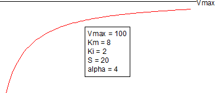

CompetitivePartial2-FitFunc
阻害剤濃度が一次独立変数として機能する単一基質の部分競合阻害モデル

パラメータ数: 5
パラメータ名: Vmax, Km, Ki, S, alpha
パラメータの意味: なし
下側境界: Vmax > 0, Km > 0, Ki > 0, , alpha > 0
上側境界: なし
nlf_CompetitivePartial2(x,Vmax,Km,Ki,S,alpha)
CompPartial2.fdf
Enzyme Kinetics 2
} { 1+ \frac{x}{ \alpha K_i} }}")